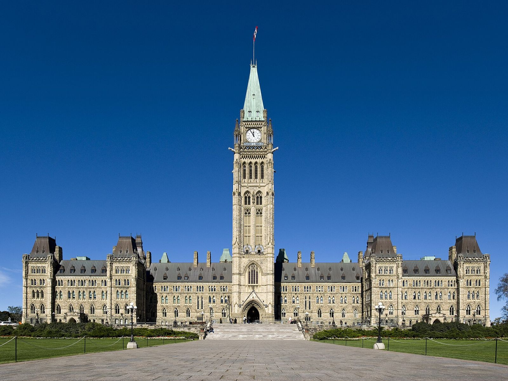
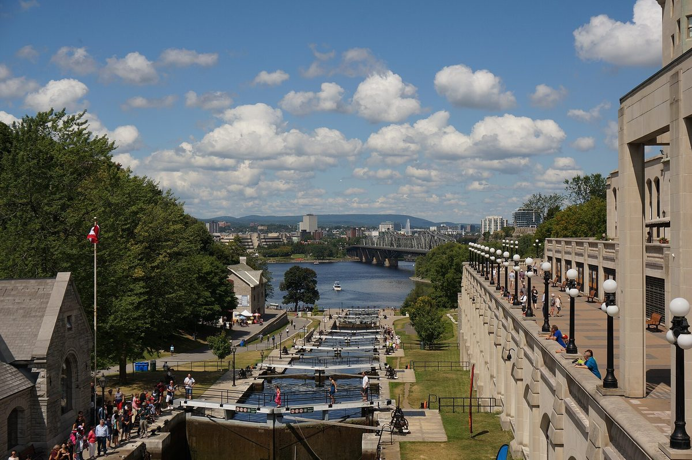

Informations pratiques
Ottawa au début de l'été
Université d'Ottawa
Département de mathématiques et de statistique
Ottawa (Ontario), Canada
Pavillon et salle à confirmer.
Pour s'y rendre
Le campus se trouve au centre-ville d'Ottawa, près du canal Rideau, et la Ligne 1 de l'O-Train s'arrête à la station uOttawa. L'aéroport international d'Ottawa (YOW) est à environ 20 minutes en voiture. Depuis Montréal, Ottawa est à environ deux heures en train (VIA Rail) ou en autocar.
Hébergement
Plusieurs hôtels se trouvent à distance de marche de l'Université d'Ottawa. Options recommandées :
Fête du Canada
L'atelier se termine la veille de la fête du Canada (1er juillet). Ce jour-là, Ottawa, la capitale, célèbre avec des concerts et des feux d'artifice au centre-ville : vous voudrez peut-être rester une journée de plus.
Ouvrir dans Google Maps
